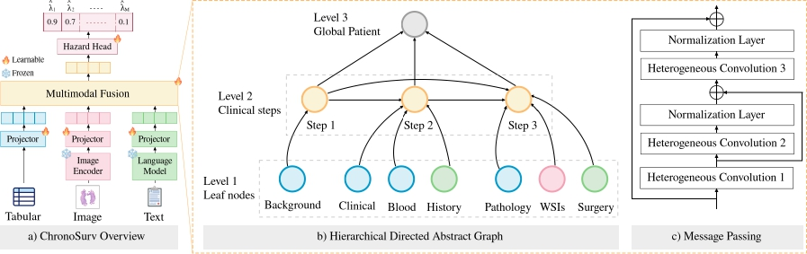
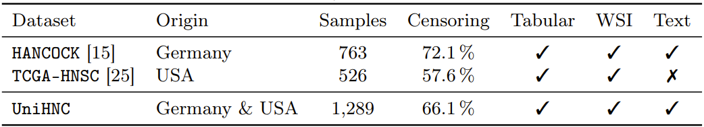
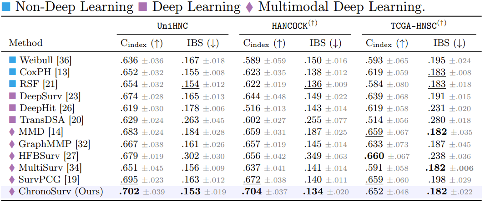
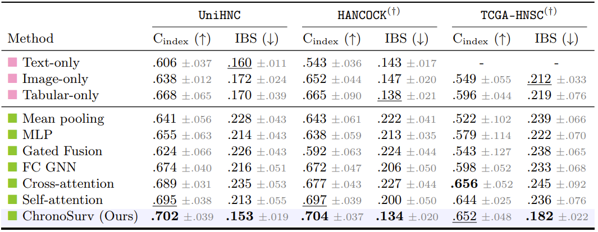
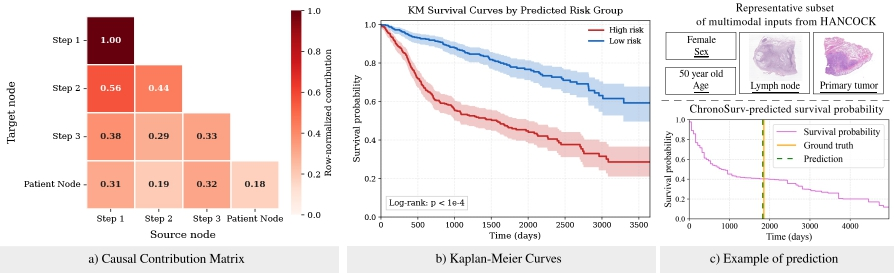

We propose ChronoSurv, a multimodal framework for survival analysis in head and neck cancer that mirrors the clinical care pathway. Our approach extracts per-modality features, models each patient as a hierarchical directed graph, enables feature interaction through heterogeneous message passing, and predicts discrete-time hazards.

Models are trained and evaluation on UniHNC, a combination of the HANCOCK and TCGA-HNSC datasets. Experiments are run using train/validation/test splits with 5-fold cross-validation. For all methods, we use a pre-trained frozen UNI as visual encoder and BioClinicalBERT as language model.

Discrimination performance is evaluated using C-index, while the IBS assesses overall survival probability accuracy. We also report per-dataset performance (HANCOCK & TCGA-HNSC).

Key findings:
ChronoSurv achieves the highest C-index across datasets while obtaining the best or tied-best IBS across all settings. Among multimodal baselines, SurvPCG reaches the closest Cindex on UniHNC but with a higher IBS, suggesting that although cross-modal attention captures relevant interactions for risk ranking, it yields less accurate survival probability estimates. On TCGA-HNSC, where text and blood modalities are unavailable, ChronoSurv matches the best IBS while maintaining competitive discrimination performance, including against MMD, which is designed to handle incomplete multimodal data.
We compare our multimodal fusion module with unimodal baselines (in pink) and variants replacing the fusion module by widely used aggregation mechanisms (in green), while keeping identical feature initialization and survival heads.

Key findings:
Unimodal baselines confirm that each modality carries prognostic signal. In fact, tabular features alone match or surpass several multimodal strategies, highlighting that naïve fusion can be detrimental. In contrast, ChronoSurv consistently outperforms all alternative aggregation schemes, supporting the effectiveness of structured multimodal interaction modeling.
We further report a leave-one-out ablation study on ChronoSurv's components.
Key findings:
Removing any individual clinical step and its corresponding leaf nodes (1-3) degrades performance across all datasets, highlighting that each clinical stage provides complementary prognostic information. Notably, excluding step 2 (initial cancer diagnosis) yields the largest reduction in C-index. Removing hierarchical levels (4 & 5) results in a performance decline, indicating that incorporating coarser information captured by intermediate clinical steps and global patient representations is critical for effective multimodal integration. Disabling heterogeneous message passing (6) consistently degrades C-index and IBS across datasets, demonstrating the importance of relation-specific modeling for structured, multi-level message passing. Finally, replacing directed edges with undirected ones (7) also degrades performance, suggesting that preserving the temporally ordered topology leads to more accurate survival prediction.
The figure below provides interpretability insights into ChronoSurv's learned representations.

Key observations:
The contribution matrix (a) indicates how information flows through the graph hierarchy, extracted from normalized contribution between two nodes. These results indicate that step 1 (background) acts as a self-contained source, step 2 (initial diagnosis) predominantly aggregates background patient information from step 1, while step 3 (local surgery) draws from all preceding steps, further highlighting the complementary nature of clinical steps. At the patient level, step 1 and step 3 contribute most to the global representation, reflecting the clinical importance of both patient history and surgical findings for prognosis. Kaplan–Meier analysis (b) demonstrates clear risk stratification, showing a statistically significant difference between groups. The panel (c) illustrates an example of prediction from ChronoSurv, with a representative subset of multimodal inputs from a HANCOCK sample.
In this work of academic research, our experiments are run on public datasets. We acknowledge contributors from HANCOCK [1] and TCGA-HNSC [2] for releasing the datasets to the research community.
[1] A multimodal dataset for precision oncology in head and neck cancer. Dorrich et al. 2025.
[2] The Cancer Genome Atlas Program (TCGA) - NCI. Dataset homepage.
@article{md_2026_chronosurv,
author = {Miccinilli, Hugo and Di Piazza, Theo},
title = {ChronoSurv: A Clinical Pathway-Guided Graph Framework for Multimodal Survival Analysis},
booktitle = {International Conference on Medical Image Computing and Computer-Assisted Intervention (MICCAI)},
year = {2026},
}